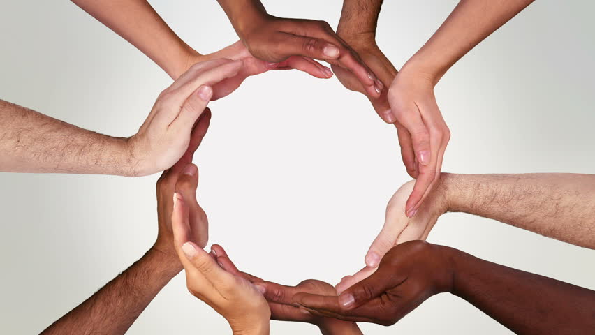
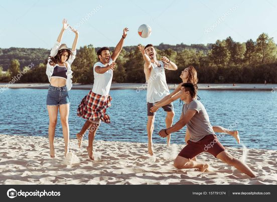
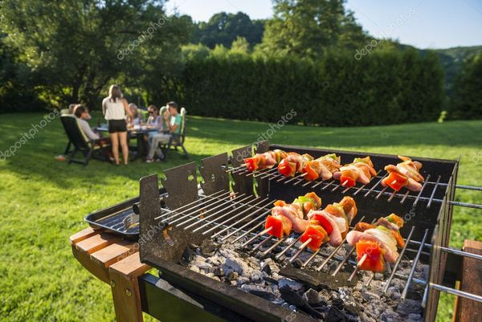

Todays Youth

Vi er alle mennesker og vi er like uansett farge.
Så lenge vi aksepyerer hverandre og tar hensyn till alle,
da blir det mindre problemer mellom oss og enklere om å holde hendene til hverandre uten negative tanker

Det er mange unge mennesker som føler seg utenfor,
fordi de har ikke en å snakke med eller noen å være med på fritida.
For at vi får samfunn som tar hensyn til sitt folk og har positive tanker er det veldig viktig å ta
være på våre unge og satse på at de er inkluderende, sosiale og at eldre mennesker forrebyger utenforskap i
blant ungdommer.

I sommeren holdt vi et teambygging prosjekt,
hvor alle ungdommene fikk lov til å snakke om deres tanker og ingasjerete seg til å gjøre en forskjell.
alle hadde med seg skrive saker for at de skulle skrive ned ideene. dette gikk kjempe bra og alle var like
kreativet

Alle i teamet ble enige om å spille ballspill. En av de ballspillene fleste mente var bra er
volleyball.
volleyball er et spill som kreves samarbeid og motivasjon av hverandre i teamet. vi bestemte å ta et forsøk og
hvis du lurere på
resultatet så tro meg, det gikk mye bedre enn forventete.

Det er mange unge mennesker som føler seg utenfor,
fordi de har ikke en å snakke med eller noen å være med på fritida.
For at vi får samfunn som tar hensyn til sitt folk og har positive tanker er det veldig viktig å ta
være på våre unge og satse på at de er inkluderende, sosiale og at eldre mennesker forrebyger utenforskap i
blant ungdommer.